Case study · 46graus · 2026
AI Photographers Assistant
Redesigning an AI agent so photographers trust it with leads, quotes and bookings.
- Role
- Product designer: UI/UX, AI definitions, AI prototype
- Team
- Me, 2 stakeholders, 2 developers
- Duration
- 1 month
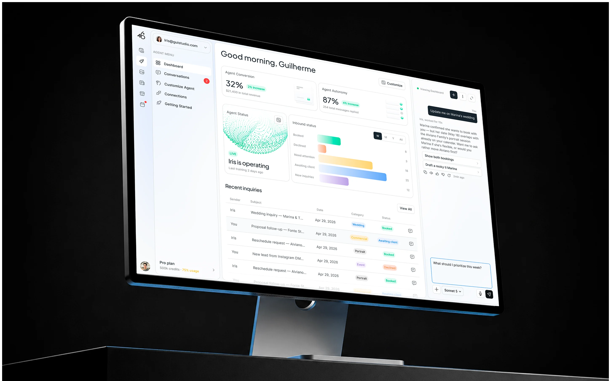
Intro · Context
An AI agent inside a platform for photographers
46graus is a digital platform for photographers. Around its website builder, it offers integrated tools, and the newest one is an AI agent that answers leads, sends quotes and books sessions.
- Website builderCore
- Online store and blogTools
- Image proofing for clientsTools
- AI agentNew · this project
Intro · Timeline
One month, from listening to a working prototype
-
Research Interviews, design audit, survey Days 1 to 7
-
Synthesis Personas, problem, goal Days 5 to 8
-
UI design and prototype Onboarding, dashboard and chat, designed straight in code with the real components Days 8 to 28
Stakeholder interviews · 01 Problem
46graus had an AI agent that few photographers used. It handled 22% of inquiries on its own, and most people quit its setup halfway.
Stakeholder interviews · 02 Goal and method
Understand the business goal and the problems they were trying to solve
MethodOne interview call with both people who decide what the agent can do.
- Miguel MartinsCEO, 46graus
- WilliamLead Developer, 46graus
ToolsFireflies.ai · Claude Code
Stakeholder interviews · 03 Results
The opportunity was real
FactPhotographers lose hours every week to sales admin, work that has nothing to do with taking photos.
Assumptions to test
- Photographers will let an AI answer every inquiryUser interviews
- People quit the setup because it asks too muchDesign audit
- Most photographers keep their prices in a fileSurvey
- Hours a week
- 3–7 h
- Spent on sales, follow-ups and booking
- Leads a week
- 5–10
- Coming in for a busy photographer
SourceDesk research, from past studies
User interviews · 01 Problem
The team assumed photographers would let an AI answer every inquiry. Nobody had asked them.
User interviews · 02 Goal and method
Understand how photographers feel about handing client work to an AI agent
- 6 photographersParticipants
- Remote, recorded and transcribedFormat
ToolsFireflies.ai
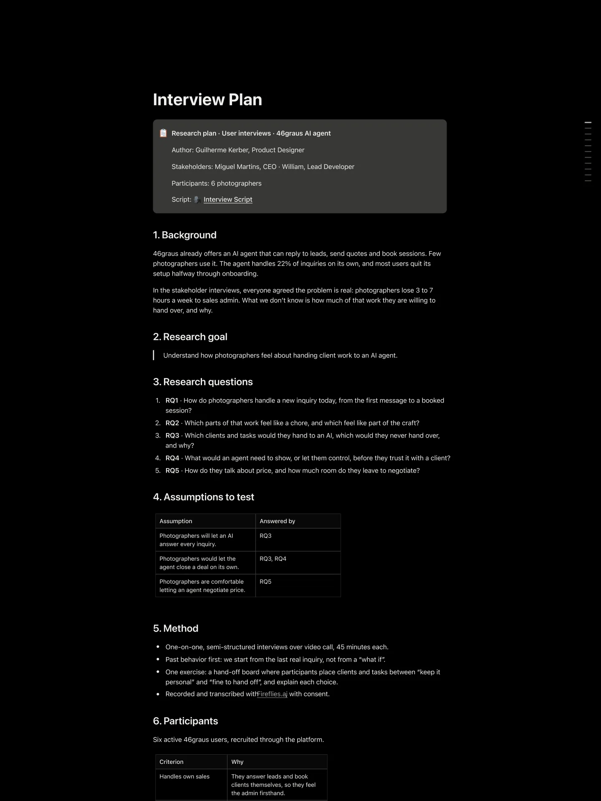
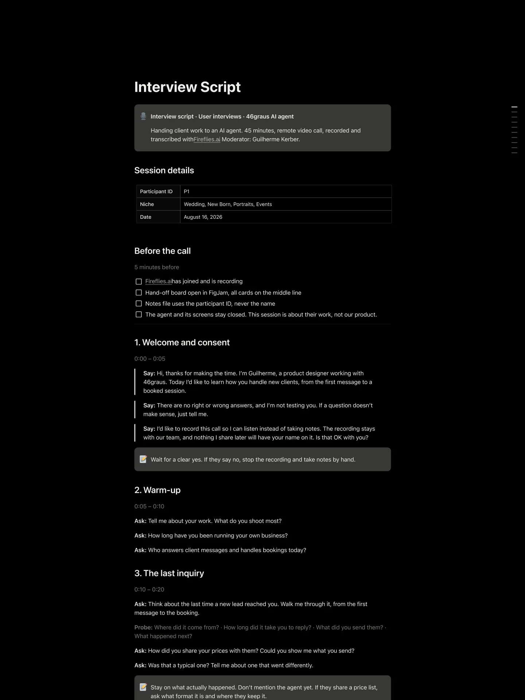
User interviews · 03 Results
Everyone would hand off the paperwork. Letting an AI negotiate depended on the service.
- 01“Answering leads isn’t a chore to take off my plate. It is the work.” Wedding photographerOpportunity: Let each photographer choose, service by service, what the agent handles.
- 02“The price, what’s included, that’s information. Anyone says it the same way.” Newborn photographerOpportunity: Automate factual replies and quotes straight from the price table.
- 03“It has to be clear to the client that it’s an automatic reply, without pretending it’s me writing.” Maternity and family photographerOpportunity: A first reply that introduces itself as an assistant.
- 04“Booking two sessions on the same day without noticing. That’s the nightmare.” Newborn and family photographerOpportunity: Check the calendar before every booking, and ask on any conflict.
Design audit · 01 Problem
Most people who started the agent setup quit halfway, and the team didn’t know why.
Design audit · 02 Goal and method
Find where and why users quit the setup
MethodA screen-by-screen review of the onboarding flow, noting each problem next to a possible fix.
- The agent onboarding flowScope
- A problem and a solution note on each screenOutput
Design audit · 03 Results
Setup was where people gave up
- 01Long groups of inputsSetup asked photographers to type every service, its unit and its price into repeated groups of fields. The more services they offered, the longer it got, and this is where most of them quit.
- 02Lack of clarity on automationsSetup never showed what the agent would do on its own and where it would stop. Without knowing what they were turning on, photographers didn’t trust it with their clients.
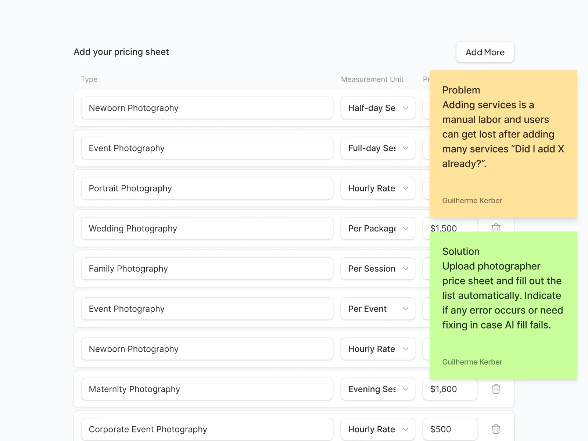
Survey · 01 Problem
The audit pointed at the price inputs, but we didn’t know where photographers already keep their prices.
Survey · 02 Goal and method
Learn where photographers keep their prices and how they share them
MethodA multiple-choice survey with 100 photographers, more than one answer allowed, before redesigning the fields.
- Q1Where do you keep your price table?PDF or image file · On my website · Spreadsheet · Other
- Q2How do clients get your prices?By message · On a call · A pricing page · A PDF price list
- Q3How do you build your prices?Fixed packages · Hourly or daily rate · Custom quote · Other
Survey · 03 Results
Prices already live in a file
75% keep prices in a PDF or image, and 89% send them by message. Setup should start from the file they already have.
Question 1
Where do you keep your price table?
- PDF or image file75%
- On my website42%
- Spreadsheet23%
- Other37%
Question 2
How do clients get your prices?
- By message, when they ask89%
- On a call48%
- A pricing page on my website42%
- A PDF price list22%
Question 3
How do you build your prices?
- Fixed packages per service79%
- Hourly or daily rate74%
- Custom quote for each client24%
- Other13%
Sample100 photographers · More than one answer allowed, so each question adds up to more than 100%
Discovery · Synthesis
From transcripts to patterns
- 01GatherInterview transcripts from Fireflies.ai, audit notes and survey answers, in one place.
- 02ExtractClaude Code read every transcript and pulled out quotes, pains and needs, each tagged to its participant.
- 03ClusterIt laid them out as an affinity map in FigJam, grouped by theme.
- 04ReviewI checked every cluster against the transcripts, merged overlaps and named the themes.
ToolsFireflies.ai · Claude Code · FigJam
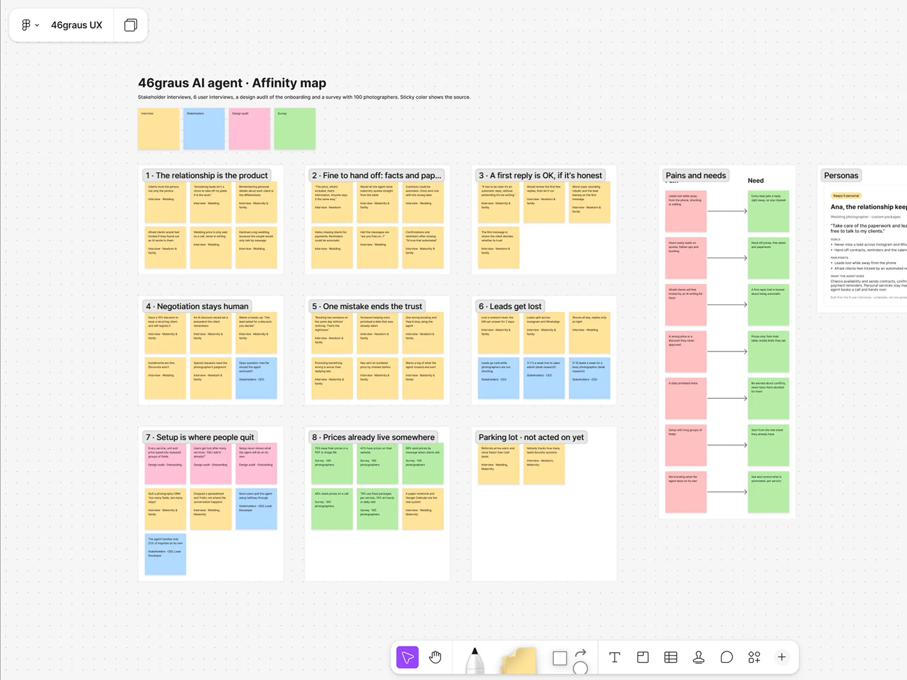
Discovery · Insight 1
Photography runs on emotional connection
A wedding or a newborn’s first days happen once, so clients want to feel a bond with the photographer before they hire. Photographers would hand off facts and paperwork, but not the conversation that builds that bond.
Wedding photographer“Good photos are everywhere. What the client is buying is me.”
- The first conversation
- Discounts
- Weddings
- Fixed prices
- Free dates
- Contracts and reminders
NextHow far each photographer moved along this line became the two personas, Ana and Rafael, on the FigJam board.
Discovery · Insight 2
A first reply is welcome. Closing the deal is not.
An automatic first reply was fine if it was honest about being automatic and stuck to facts. Negotiating and closing stayed with the photographer. After that, the paperwork could go back to the agent.
- LeadAsks about a date
- AgentReplies right away, as an assistant
- AgentShares prices and free dates
- Hand-off
- PhotographerNegotiates and closes
Maternity and family photographer“It has to be clear to the client that it’s an automatic reply, without pretending it’s me writing.”
Newborn photographer“The price, what’s included, that’s information. Anyone says it the same way.”
Discovery · Insight 3
One mistake, and they’d stop using it
I asked what would make them give up on the agent. The answers were specific, and each one became a rule.
Newborn and family photographer“Booking two sessions on the same day without noticing. That’s the nightmare.”
- 01A double-booked datePromising a date that was already taken was the worst case anyone could picture. They wanted a warning, not a decision. It became a guardrail: never double-book.
- 02A discount they didn’t approveOne discount sets a precedent the client remembers. Price talks had to stay inside limits the photographer sets. It became the flex range.
Define · How might we
How might we let photographers hand off the repetitive part of sales, without losing the personal touch?
Define · Goal statement
Our AI agent will let photographers hand off replies, quotes and bookings, service by service and step by step, which will keep leads warm and give them control over what’s automated.
Design · Decision 1 of 3
Where the agent stops
It replies, schedules and negotiates per service, not as one package. It stops and asks on date conflicts, out-of-range budgets and judgment calls, like a discount in a slow month.
Trade-offLess automation, more trust. Photographers won’t turn on an agent they can’t predict.
- TriggerA new inquiry comes in
- Agent · alwaysReplies right away
- CheckIs this service set to automatic?Weddings and custom packages usually aren’t NoYouBooks a call, you take over
- CheckIs the date free? NoYouStops and asks
- CheckIs the budget inside your range?Service price, minus the flex you set NoYouStops and asks
- CheckIs it a judgment call?Like a discount in a slow month YesYouStops and asks
- AgentNegotiates inside your range and books the session
Guardrails · always on
- Never invents a price
- Never goes past your flex range
- Never closes a personal service
- Never double-books
Design · Decision 2 of 3
Set the rules, then share what you have
Setup was where people gave up. Now it asks what the agent may do, then reads the files they already have.
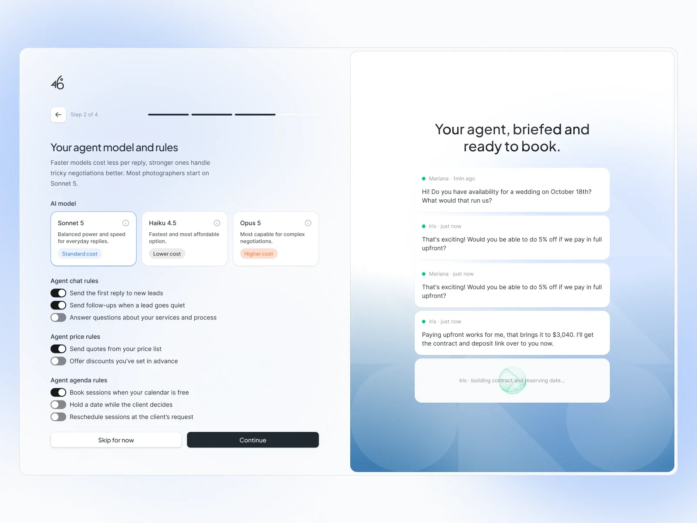
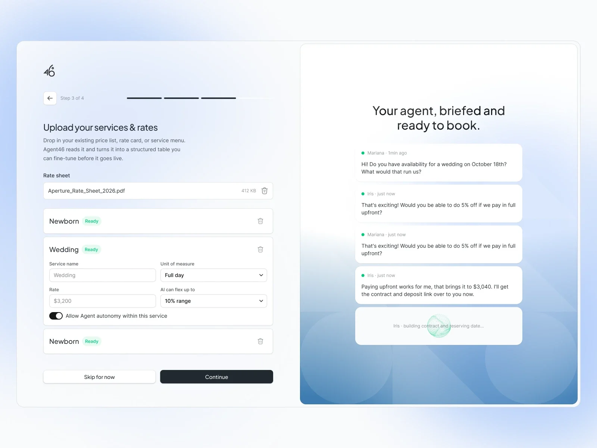
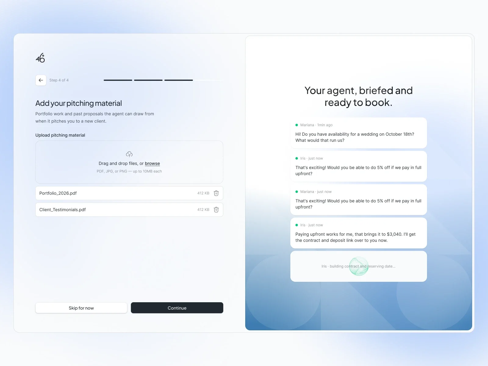
Design · Decision 3 of 3
Dashboard and chat, together
The chat sits beside the dashboard, so the agent answers with leads, calendar conflicts and charts in view.
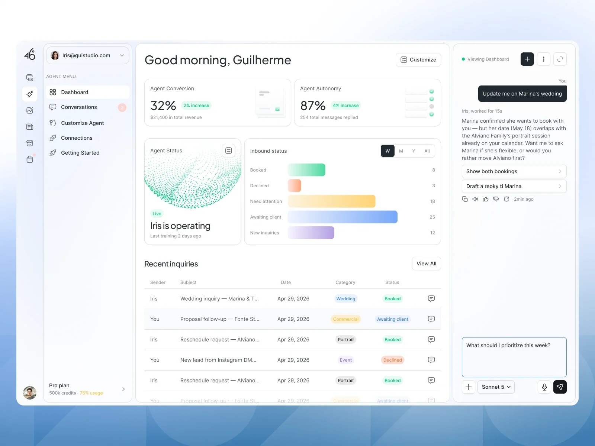
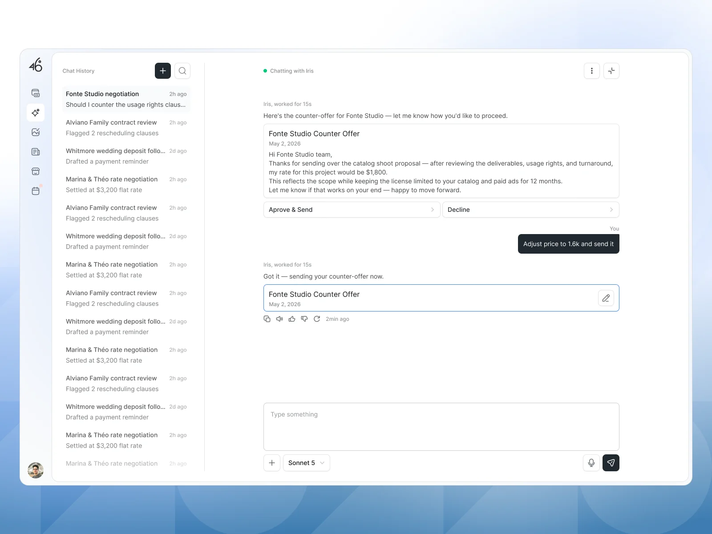
Outcome · Impact
Photographers keep the conversations that matter and hand off the rest
- Onboarding TTV
- -35%
- Faster setup, with rate sheets auto-filling the form
- Agent autonomy
- 22% → 61%
- Inquiries the agent now handles on its own
- Admin work saved
- ~5 hrs/week
- Less time on sales, follow-ups and booking (estimated)
SourceReported by 46graus for the first month after launch. I asked the team for these numbers; I didn’t measure them myself.
Outcome · The product
The redesigned workspace
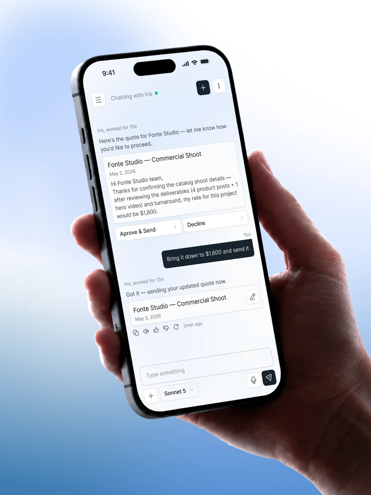
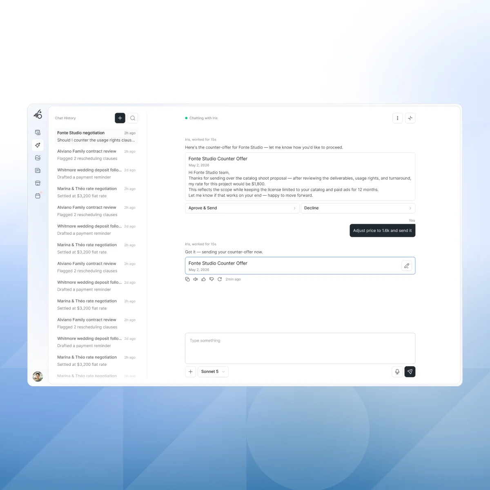
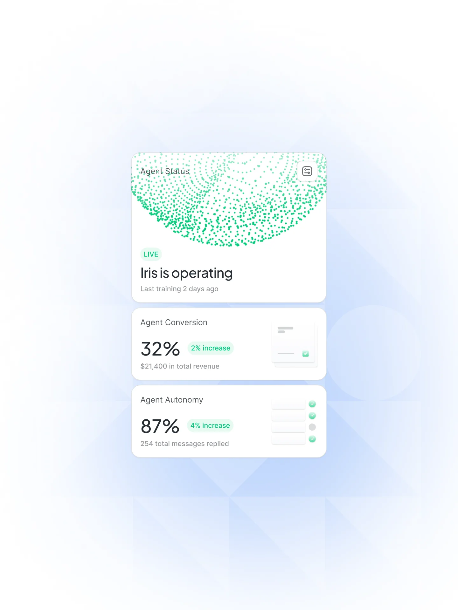
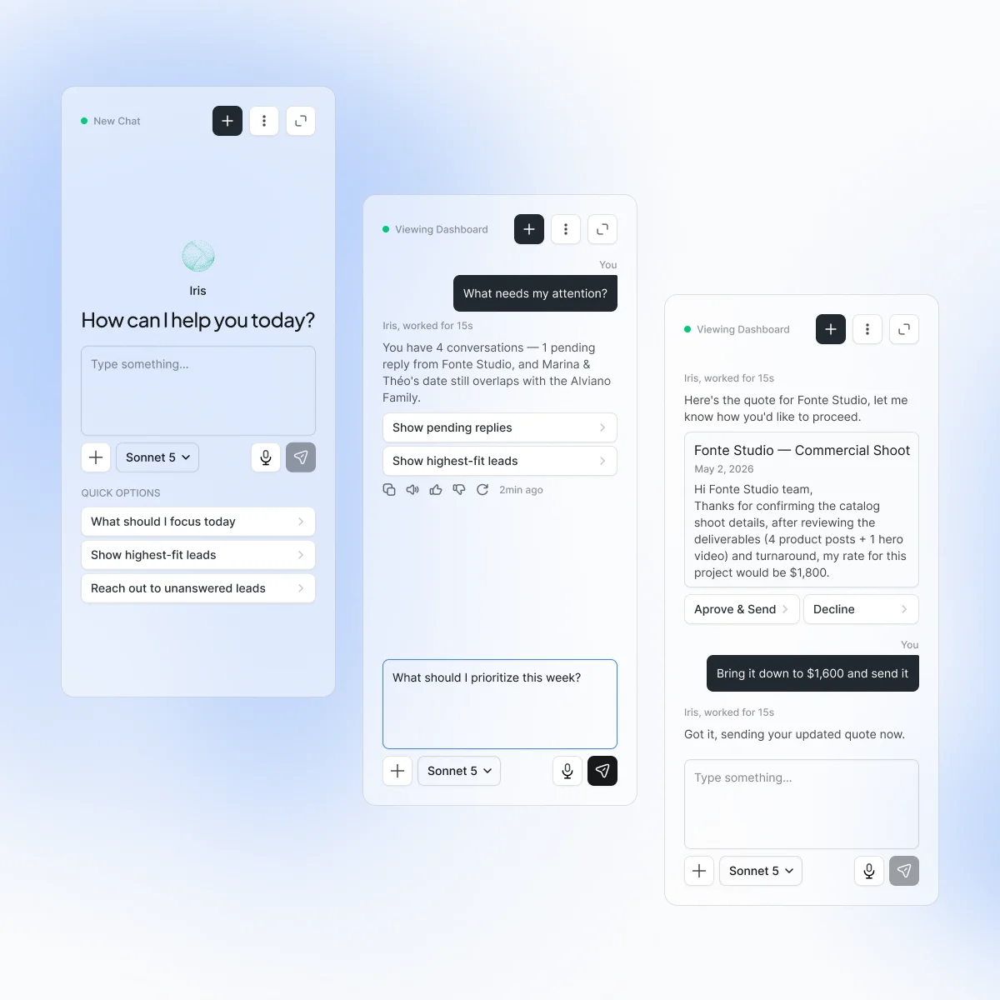
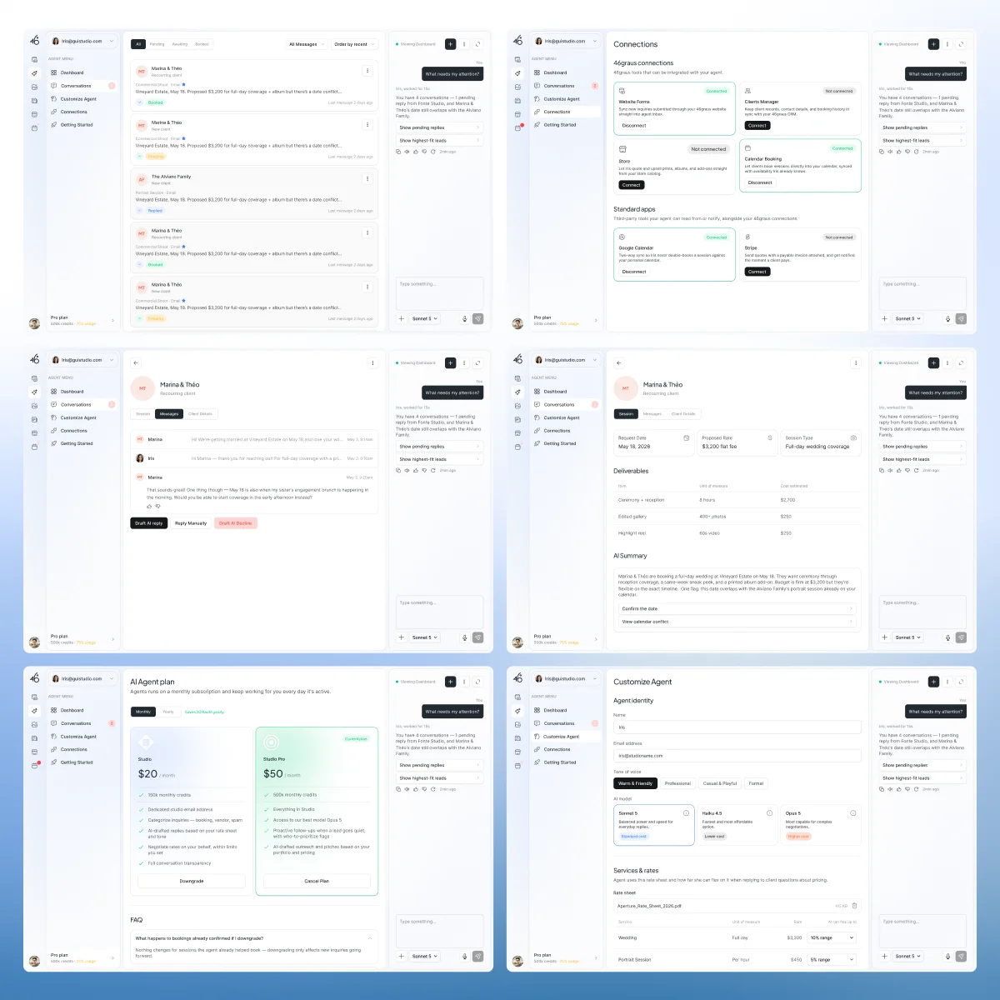
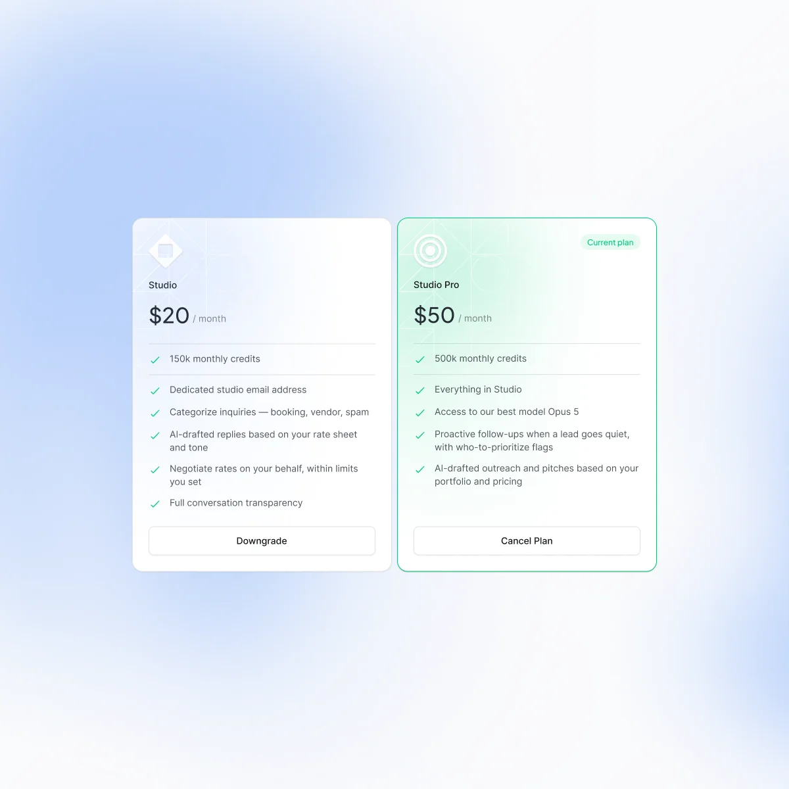
Outcome · What I learned
Three things I’d take to the next AI product
- Fit the AI to its context. Knowing where the agent works, and setting limits that suit that context, is what lets people use it with confidence and get real work off their plate.
- Money needs certainty. People don’t hand financial decisions to an AI agent until they’re sure it will stick to their numbers.
- AI prototyping works once the design system is wired in. Rules that force real components and semantic tokens kept Claude Code from inventing UI.